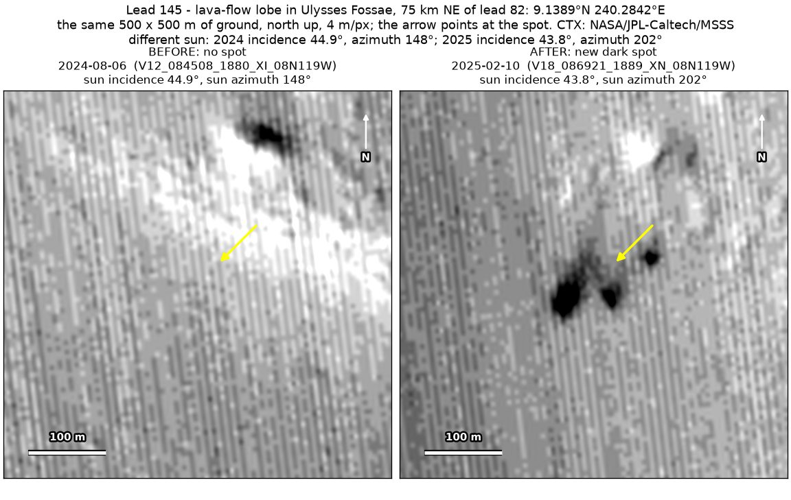
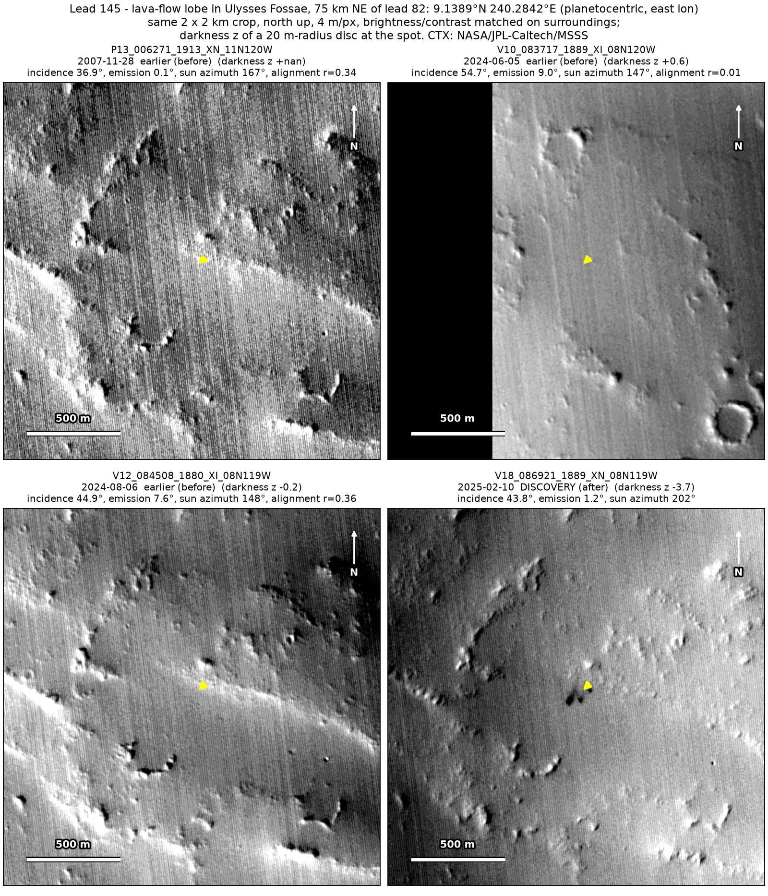
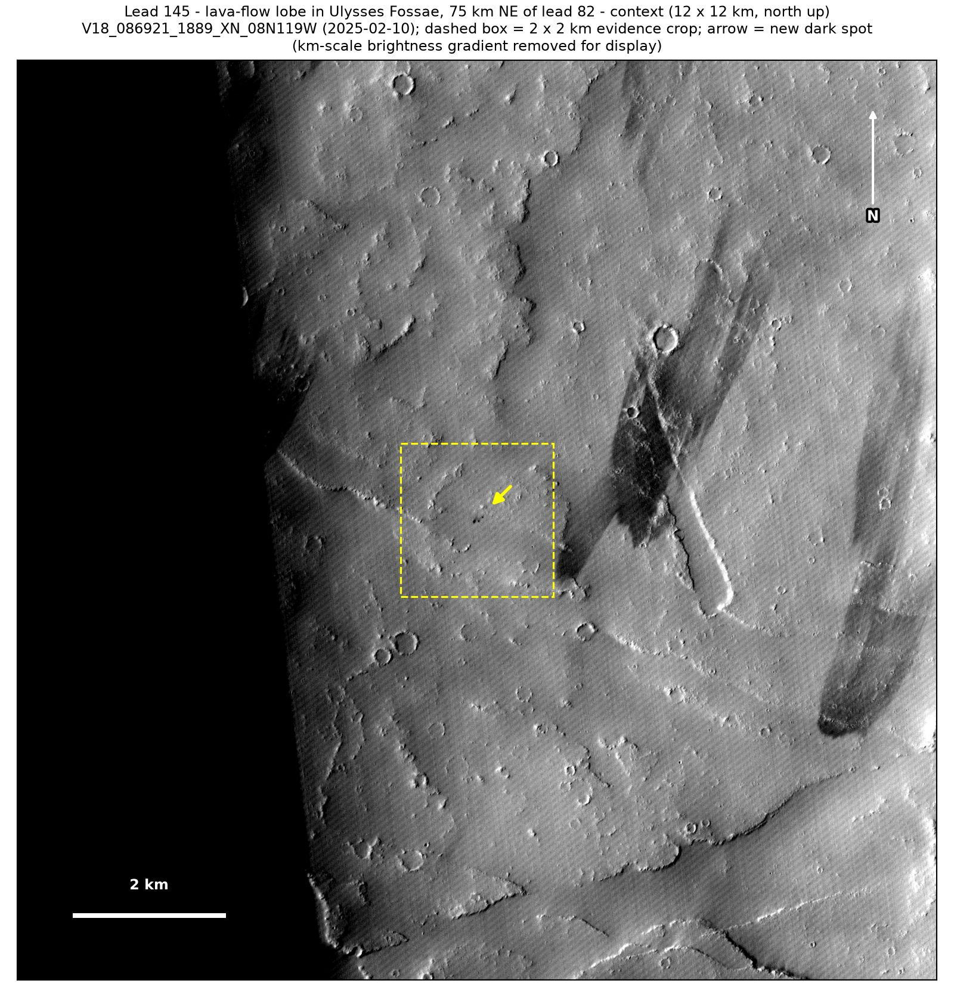

Professor of Mathematics
Paata Ivanisvili
Department of Mathematics, University of California, Irvine

← Possible new impact sites on Mars
Candidate 145: Lava-flow lobe in Ulysses Fossae, 75 km north-east of candidate 82
Promising · roughly 45%

What changed. A cluster of three compact dark spots, the largest about 30 m across, appeared within about 125 m on lava plains in Ulysses Fossae, near the edge of a lava-flow lobe, between August 2024 and February 2025, in one CTX image so far.
Why it may be a new impact. Both usable earlier images, from 2007 and 2024, show plain ground there, the August 2024 one with the sun from another direction than in the February 2025 image, while a dark feature 211 m away shows in both, and a tight cluster of compact new dark spots is the usual look of a small impactor that broke up in the air.
- Location
- 9.139° N, 240.284° E (119.716° W)
- Absent
- 28 November 2007 and 6 August 2024
- Present
- 10 February 2025
- Size
- Three compact dark spots within about 125 m: the largest about 30 m across (28 × 32 m), the others about 25 and 20 m
- Confidence
- Promising candidate; roughly 45% that it is a new impact.
- Caveat
- Only one image shows it, so it is rated promising rather than strong; in that image the sun comes from a direction 35 to 55° away from every earlier image, which also darkens the shaded sides of knobs elsewhere in the area about as much, although the earlier images show no knob or slope at the cluster’s place. That image also shows broad dark bands, shadows of clouds or very broad dust-devil tracks, the nearest ending about 1 km away, and the earlier images line up only moderately well, the 2007 one with very low contrast. It lies outside every footprint of the high-resolution HiRISE camera; the nearest ends 14.0 km away. Like every candidate here, it is unconfirmed: see the caveat.

